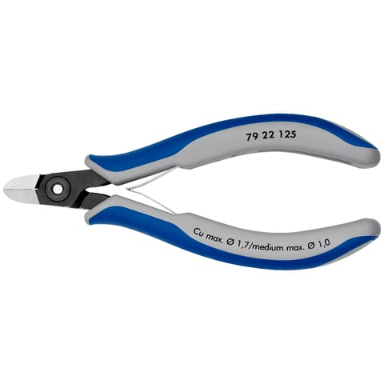
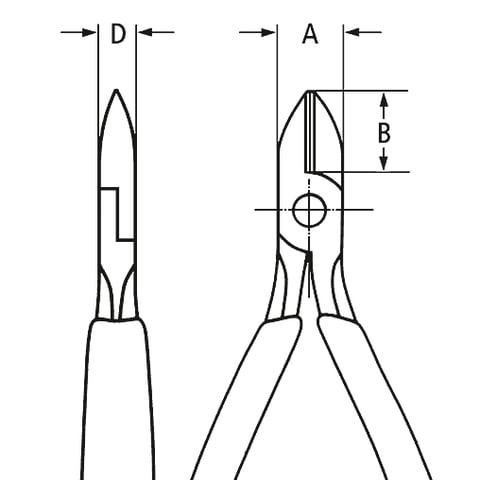
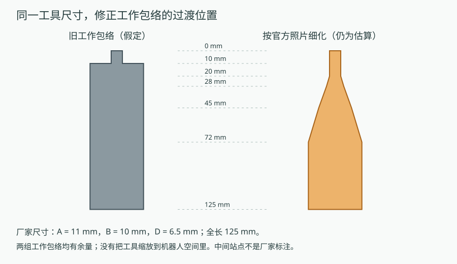
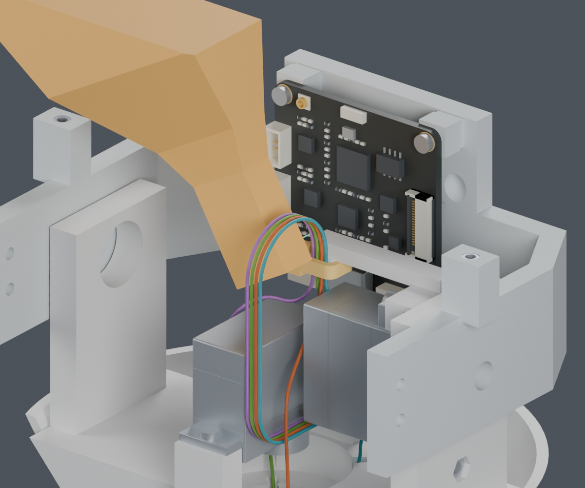
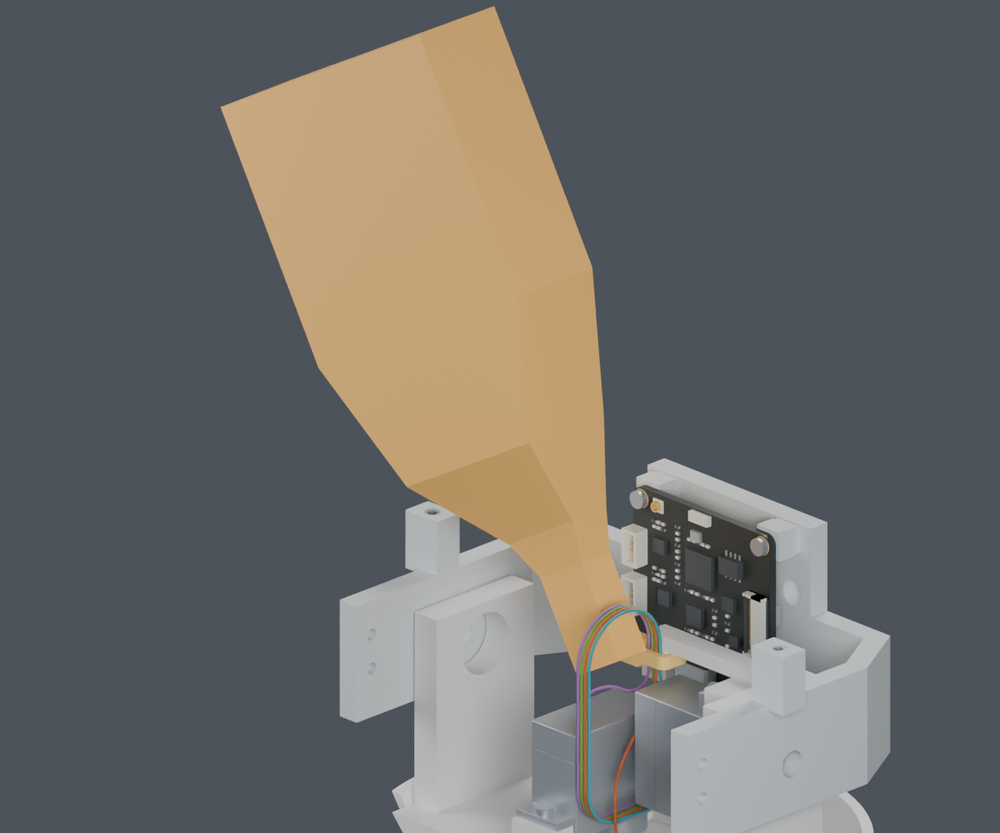
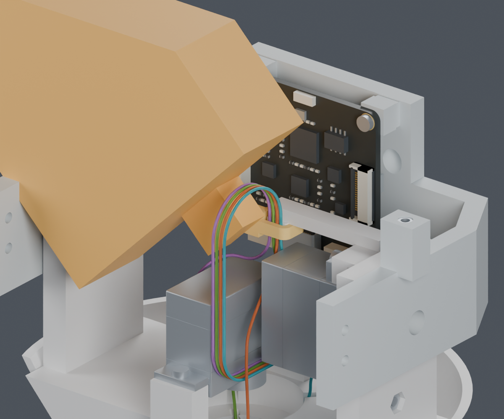
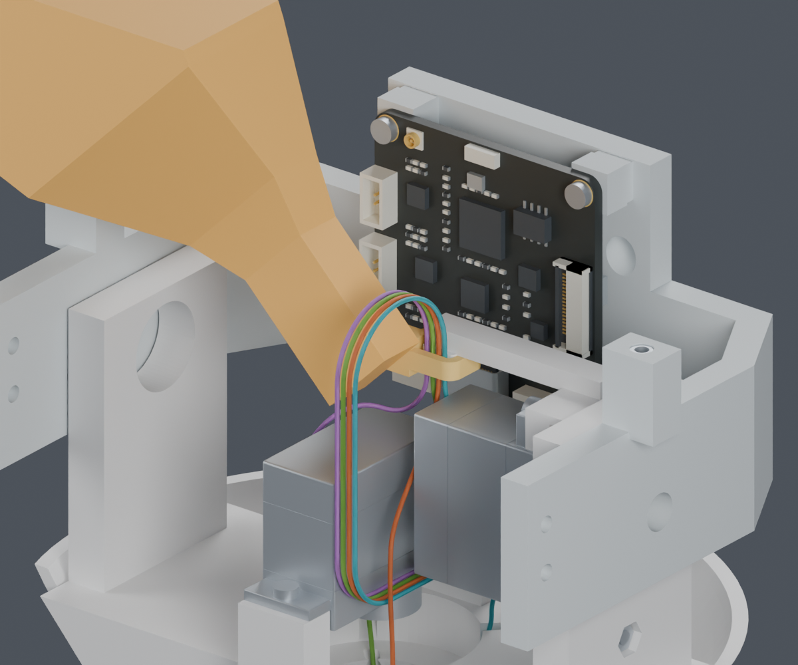
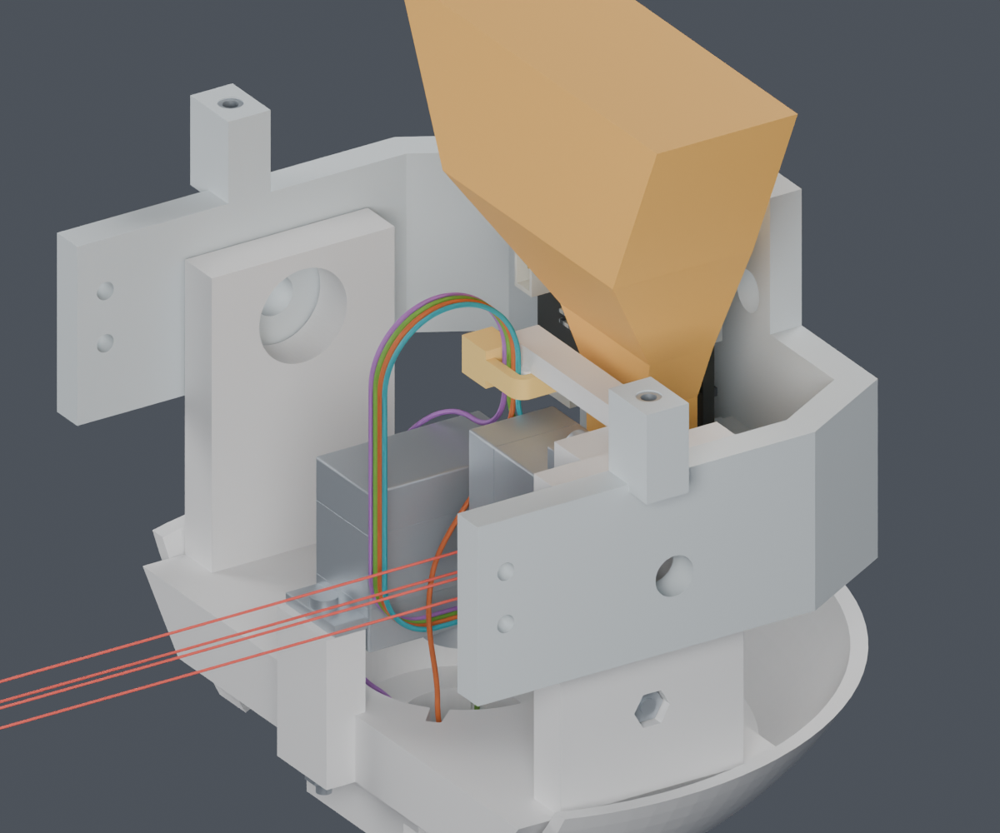

← A8研究 · 当前未完成项 · 上一步：42mm下放检查
Yaw侧30°的工具工作区在本次名义几何检查中通过，扩大包络后仍有余量。完整线束仍为BLOCKED；主模型M1.47、正式动画均未修改。
供应商按图制作已确定。端子完整料号的公开工艺数据已经取得；MORI自己的路线、装配顺序和长度还需要由项目完成。
官方资料给出125×60×19mm、钳头A=11mm、刀口B=10mm、关节D=6.5mm。旧包络把宽手柄放在距刀尖10mm处；这个过渡位置没有厂家依据。


新工具形状是参考照片的分段工作包络，仍标为ASSUMED；不是完整厂家CAD或实测工具。



| 方向 | 参考轮廓 | 扩大包络复核 |
|---|---|---|
| 30° | PASS；线表面余量下界1.34mm | PASS；余量下界0.66mm |
| 45° | PASS | BLOCKED；过渡靠近头托 |
扩大包络：宽度+2mm、厚度+2mm，中间过渡提前3mm。它是敏感性检查，不是厂家公差。后续优先研究30°。刀片开合、夹紧力、手部和真实工具仍未验证。



这不证明真实柔软扎带一定相交。即使暂缓两只舵机，旧直向操作区仍靠近颈部引线；随后按既有路径装舵机，也遇到引线或扎带头。不能把局部工具通过当成整段装配通过。
这轮另试的等长侧向展开路径也未通过，检查记录保留。下一步需要把CAM端预绑扎、Yaw端暂不锁紧和身体端松线暂存放到同一条装入路径中。当前未新增孔、台阶或零件。
七根其余头部线、FPC及身体侧固定还未完成。图中颜色仅区别几何线路，不是供应商线色或已确认针序。裁线长度仍未放行。
完整说明及官方来源链接 · 独立Blender · 轮廓对照 · 两处工具检查 · 敏感性检查 · 后装舵机检查 · 来源记录 · 复现命令 · 交付记录